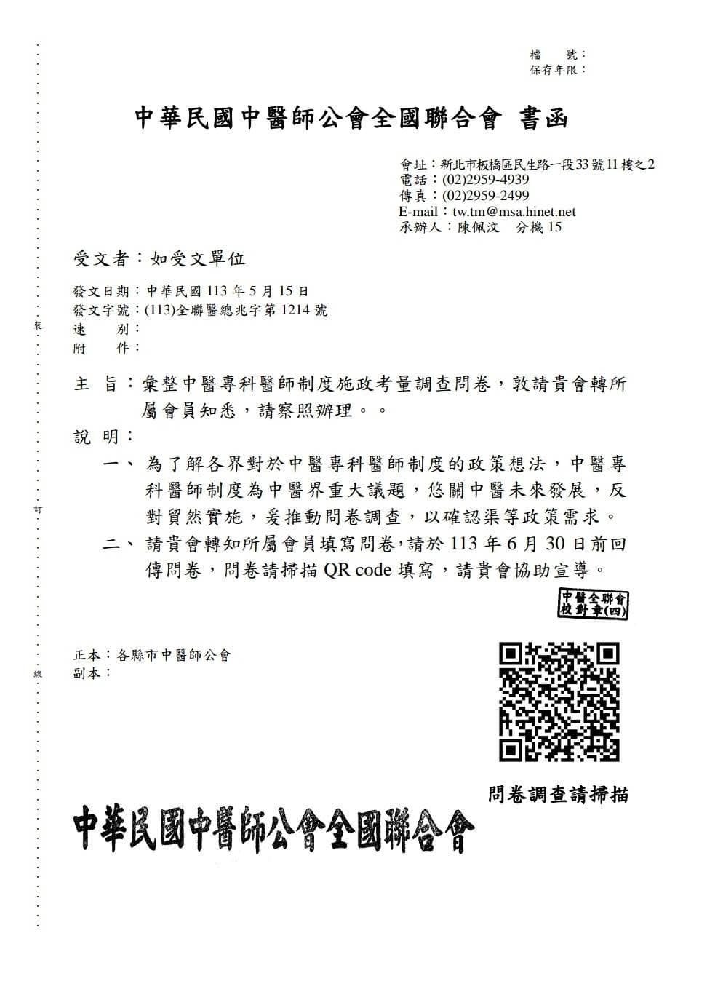

關係著台灣中醫屆未來5-10年的變化，各位同道趕快填寫，雖然常覺得孤臣無力可回天…
關係著台灣中醫屆未來5-10年的變化，各位同道趕快填寫，雖然常覺得孤臣無力可回天，但總有陰盡陽生的一刻！百廢待興，說不定這就是一次轉捩點！
————————
「中醫專科醫師制度」施政考量調查問卷
1.依據113.5.15(113)全聯醫總兆字第1214號函辦理。
2.為了解各界對於中醫專科醫師制度的政策想法，中醫專科醫師制度為中醫界重大議題，悠關中醫未來發展，反對貿然實施，爰推動問卷調查，以確認渠等政策需求，希望透過以問卷調查方式來蒐集各界想法與問題，以具體量化的統計資料，進一步釐清、分析，以期能提出妥適或更多元之解決方案及機制，作為與衛生福利部施政溝通之依據，懇請各位中醫師同道、先進踴躍參與。
3.請於113年6月30日前回傳問卷。
https://docs.google.com/forms/d/16wjzUC241SoM0AYtjWMGIqzcXDYpsZQcqcf2r0GczY8/viewform?edit_requested=true
